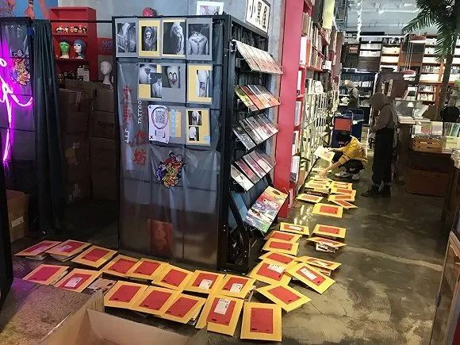

二月二，教老婆给我理发
原文链接 备份链接 “二月二，剃龙头”。五十年前我在农场当理发师时没有收过一个徒弟，没有想到五十年后，在这疫情的非常时期，老婆却成了我的徒弟。 这段日子，我静静呆在家里，但头发却在马不停蹄地日生夜长。习惯短发的我觉得头发长了就难受，但 …
 1200bookshop
1200bookshop
记者：马越 编辑：牙韩翔
“
广州第一家24小时不打烊的书店，第一次在夜晚熄了灯。脆弱的实体书店行业，也将迎来生存危机。
”
2月24日，“二月二”这一天，由许知远联合创办的单向街书店，开始在社交网络上发出众筹求助。
这个坚持了15年的书店品牌，仅剩的4家实体书店只有北京朝阳大悦城一家开始营业，预计整个2月份收入较往年直线下滑 80% 之多，对这个本来就利润微薄的行业来说，这意味着绝境。
“每一个普通人的疼痛和焦急，汇成了此刻我们共同的命运。”求助信里说。
疫情对于实体行业的冲击显而易见。比起餐饮行业的大声疾呼，实体书店的发声微弱了很多。当然也是因为饭店屯菜可以出售，可以送外卖，因为它是生活必需，而图书却不是。
2月4号晚上10点，广州体育东路1200bookshop的店员开始准备打烊。
白天的客流已经急剧减少。这座南方城市夜晚热闹的景象不再，零星的几个顾客走出门，和戴着口罩的店员点头，彼此用眼神致意：“注意安全。”
广州第一家24小时不打烊的书店，第一次在夜晚熄了灯。
事态开始变得严重的时候，书店老板刘二囍还在国外。春节前夕他按照计划出行，去考察洛杉矶当地的实体书店。国内防疫升级的消息接连不断，他开始感到忐忑不安。
1200bookshop 图片来源：1200bookshop微信公众号
变化来得突然。正常营业的状态被疫情踩了急刹车，整个春节到2月的前两周，他在国内一半以上的门店关闭，没有任何收入来源。勉强保持营业状态的门店，收入也非常惨淡，甚至不及平日的十分之一。不出意外，二月份所有门店将全线亏损。
春节，通常是实体书店行业一年中资金链最脆弱的时候。
整个1月份，除了给员工发工资，大部分书店都在为春节档和开学季做准备，采买进货，给供应商结货款。尤其是中小书店，如果没有收入，房租、工资、货款每一项都在成为压垮它们的重担。
刘二囍联络了房东，尝试申请租金减免，在迟迟没有得到肯定的回复后，他在创办实体书店6年来第一次觉得，“可能真的到了事关生死的时刻。”
“大家都觉得，关门结业接下来就是遣散员工，快要活不下去了。”孙谦是最早觉察到行业集中迎来生存危机的人之一，她是国内实体书店联盟“书萌”的创始人。整个春节，书店群里的同行们都是唱衰的声音。
大年初二，她看到同行曾锋写了一篇《一个书业人的鼠年春节随想》，呼吁书店自救。于是紧随其后，决定发起一份书店现状的调查。“第一是希望大家知道受伤的不止你一家，第二是让大家知道我们每个人都在关心书店，我们先要把信心提振起来。”孙谦告诉界面新闻。
截止2月5号，从全国范围内收到1021份问卷，孙谦和曾锋合作发布了一份报告。他们发现，停业书店已经超过了90%，超过99%的实体书店目前没有正常收入，79.04%的实体书店的资金则撑不过3个月。
“基本可以判定，自2013年以来的实体书店回暖复苏期将宣告结束，未来一段时间内将会出现大范围的中小实体书店应急调整甚至闭店现象。”报告中说，“实体书店需要自我诊断、开方找药、自我解救。”
看到这份行业报告，还在洛杉矶的刘二囍和10个同事紧急开了会，盘算着该如何计划下一步。占据往日营收4成的咖啡业务做不了，图书虽然并不像水果蔬菜那样怕烂在地里，但它们只要摆在书架和堆放在仓库多一天，书店便会承受多一天没有流水的压力。
迟迟无法复工，员工们担忧当下的疫情，也担忧未来的生计。
刘二囍曾经说过自己不太赞成实体书店“太过悲情”的表达，“早几年，传统书店面临集体凋零，面临消亡自然会有惋叹的情绪。大量媒体哀挽式的报道，加剧了这种悲情。”他说，“悲情难免，只是不希望过于渲染这种情绪，生活总得继续，要努力乐观。更值得着墨的应该是探寻如何改变与应对，面向未来。”
但眼下顾不得那么多，求生欲让他开始寻求线上渠道。
2月15号晚上11点55分，刘二囍在1200bookshop的微信公众号中第一次向读者们发出了一封求救信，“六年来，不打烊书店一直24小时亮着灯，夜间从未停止过营业的1200bookshop总店（体育东店），夜间已经熄了灯。对此我们非常担忧，如果这种状况持续再久一些，书店的灯也将在白日无光。”
通过微信小程序的方式，读者可以购买1200bookshop的储值卡、帆布袋文创，或是包含图书和文创的“盲选礼包”——读者可以留言当下的感触或者阅读倾向，书店则会尽力为每个人的需求来匹配。
多亏书店微信公众号积累了超过10万的粉丝，很快，这篇文章的阅读量超过了10万。读者留言道：“加油，自救不丢人”“请一定要撑下去，等疫情过去之后我去广州找你。”
由于直飞航班取消，刘二囍辗转泰国终于回到广州，同时带回来的，还有朋友帮忙在海外采购的2000个口罩。微信小程序图书订单超过了2000单，文创帆布袋也卖了1000多个。
平日的咖啡消费区、地上都摆满了书，所有人的工作量比往常突然大增，他一回到店里，就和所有员工一起忙着选书、打包和发货。

店内打包发货的场景 图片来源：1200bookshop微信公众号
实体书店，在各个零售领域中应该算是最赚不到钱的行当。传统书店尤其是中小型书店，很难与电商平台在价格上有什么竞争优势。在资金压力之外，主营业务单一、收入来源较少也是问题，“我们在行业内做过调查，如果卖书的收入占到30%以上，那就一定是亏损的。”孙谦告诉界面新闻。
愿意开书店的老板，大多出自情怀。
刘二囍创办24小时书店的念头，是在中国台湾环岛1200公里时诞生的——1200bookshop的店名，也正是来源于此。夜里2点钟，还有出租车在24小时营业的诚品书店门口排队，给他“带来了很大冲击”，而他也被这种人文关怀所吸引。
供背包客休息的地方 图片来源：1200bookshop微信公众号
2014年回到广州，他就在居住的小区附近找了间铺子，临街的店铺充满了烟火气。后来随着业务的扩张，1200bookshop的几家分店开在广州和深圳的商业中心。但刘二囍始终让总店保持24小时营业——“为一座城市点燃一盏深夜的灯”，举办读书会、观影会、音乐会等各类文化沙龙活动，每周六晚从12点到凌晨2点的“深夜故事”也在持续更新。以及，这里还会为背包客提供过夜的容身之所。
“有三分之一的顾客会经常来，还有人喜欢在这里过夜。”刘二囍告诉界面新闻，“对于这家总店，我始终把它当做理想中的独立世界——而它也是最接近独立书店形态的。”
截止2月24日，1200bookshop的总店仍然没有恢复24小时营业，还有1家仍然在闭店中。
未经授权 禁止转载

原文链接 备份链接 “二月二，剃龙头”。五十年前我在农场当理发师时没有收过一个徒弟，没有想到五十年后，在这疫情的非常时期，老婆却成了我的徒弟。 这段日子，我静静呆在家里，但头发却在马不停蹄地日生夜长。习惯短发的我觉得头发长了就难受，但 …
原文链接 备份链接 【财新网】（记者 黄姝伦）长潜伏期新冠肺炎患者、无症状感染者出没，“狡猾”的新冠病毒给防疫再添警钟。 官方消息2月23日披露，广州市荔湾区爆发一起新冠肺炎家庭聚集性发病。1月22日，武汉封城前一日，潘某一家六口乘坐高铁 …
原文链接 备份链接 据韩国中央防疫对策本部24日通报，截至当天上午9时，韩国较前一天下午4时新增161例新冠肺炎确诊病例，累计确诊病例达763例，出现7例死亡病例。另据韩媒报道，一名16个月的女婴被确诊感染，这是目前韩国年龄最小的新冠肺炎 …
原文链接 备份链接 三十多天来，这座城市发生了什么，经历了什么，我们用31张照片，拼接成武汉影像日历，与大家一同铭记。 全文8976字，阅读约需16分钟 点击下图进入阅读新京报特别策划 编辑 陈婉婷 校对 吴兴发 2020年1月23日 …
原文链接 备份链接 *************▲ *************2月10日，在太行山深处的河北石家庄市井陉县北良都村，北良都小学一名学生在家中利用网络听课学习。 （新华社 张秀科/图） 全文共3875字，阅读大约需要8分钟。 …